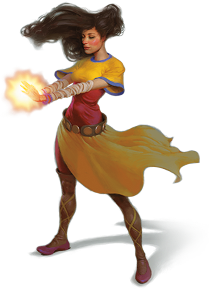

According to Wizards of the Coast, "Monks make careful study of a magical energy that most monastic traditions call ki. This energy is an element of the magic that suffuses the multiverse—specifically, the element that flows through living bodies. Monks harness this power within themselves to create magical effects and exceed their bodies’ physical capabilities, and some of their special attacks can hinder the flow of ki in their opponents. Using this energy, monks channel uncanny speed and strength into their unarmed strikes. As they gain experience, their martial training and their mastery of ki gives them more power over their bodies and the bodies of their foes."
Most people imagine monks as their name (and image) sake; Shaolin monks. While that wouldn't be wrong per se, it is still better to imagine the class as wholly unique to avoid treading on real-life people; besides, monks have a treasure trove of interesting mechanics to take the attention. Besides massive multiattacks, monks are also the only class (barbarian excluded) to have access to unamored defense and unarmed attacks, with powerful movement options.
Flurry of Blows! Make 2+ attacks as a bonus action, more as you level up!
